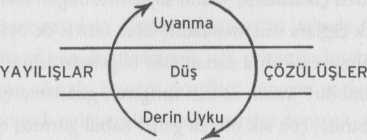

Bireyin bilinci uyku içinde indiği ve içinde gizemli bir biçimde uyandığı bir gece denizinde dinlenirken, mitin imgeleminde evren yine içinde yok olup gittiği bir zamandışılıktan çıkar ve sükun bulur. Ve bireyin akıl ve beden sağlığı yaşamsal güçlerin bilinçsiz karanlıktan uyanma gününe doğru düzenli bir akışına bağlı olduğundan, yine mit içinde, kozmik düzenin sürekliliği ancak gücün kaynaktan denetimli bir akışıyla kesinleştirilir. Tanrılar bu akışı yöneten yasaların simgesel kişileştirmeleridir. Tanrılar yeryüzü şafağında ortaya çıkar ve alacakaranlıkta kaybolurlar. Gecenin ebedi olması gibi ebedi değillerdir. Kozmogonik bir çağın çevrimi ancak insan varoluşunun kısa süresi açısından kalıcı görünür.
Kozmogonik çevrim genelde kendini yineler şekilde belirtilir; sonu olmayan dünya. Uyku ve uyanma bir yaşam boyunca art arda yinelenirken, her büyük çevrimle birlikte sık sık daha küçük yok olup gitmeler söz konusu olur. Bir Aztek versiyonuna göre, dört öğenin her biri -su, toprak, hava ve ateş- dünyanın bir dönemini belirtir: Sular çağı tufanla sonlandı, toprak çağı depremle, hava çağı rüzgârla sonlandı ve şimdiki çağ alevle yok olacak.{353}
Stoacı çevrimsel yangın öğretisine göre, tüm ruhlar dünya ruhuna ya da ilk ateşe karışır. Bu evrensel yok olup gitme sonuçlanınca, yeni bir evrenin oluşumu başlar (Cicero’nun renovatio’su) ve her şey, her tanrısallık, her kişi eski rolünü yeniden oynayarak kendini yineler. Seneca “De Consolatione ad Marciam”da bu yıkımın betimlemesini sunmuştu ve görünüşe göre gelecek çevrimde yeniden yaşamaya oldukça hevesliydi.{354}
Kozmogonik çevrimin mükemmel bir tasavvuru Caynaların mitolojisinde bulunmaktadır. Bu çok eski Hint mezhebinin en son peygamber ve kurtarıcısı olan Mahavira, Buddha’nm çağdaşıydı (MÖ altıncı yüzyıl). Ailesi çok daha önceki, omuzlarından yılanlar sarkarken tasvir edilen ve MÖ 872-772 yıllarında yıldızı parlayan bir Cayna kurtarıcı-peygamberi olan Parşvanatka’nın müritleriydi. Parşvanatka’dan yüzyıllar önce, çok sevilen Hindu bedenlenmesi Krişna’nın kuzeni olduğu söylenen Cayna kurtarıcı Neminatha yaşamıştı. Ve ondan da önce, dünyanın çok daha eski bir çağında, erkeklerle kadınlar evli çiftler halinde doğarken, iki mil uzunluğundayken ve sayısız yıllarca yaşarken varolan Rişabhanatha’ya kadar uzanan tam yirmibir başkası vardı. Rişabhanatha, insanlara, yetmişiki bilim (yazma, aritmetik, kehanetleri okuma, vb.), altmışdört kadın becerisi (yemek yapma, dikiş dikme vb.) ve yüz başka sanat (çömlekçilik, örgü, resim, demircilik, berberlik vb.) öğretmişti; ve ayrıca onları siyasete bulaştırmış ve bir krallık kurmuştu.
Ondan önce bu tür yenilikler gereksizdi; çünkü önceki dönemin - dört mil uzunlukta, yüz yirmi sekiz kaburgalı olan, sayısız yıllık iki dönemli bir yaşam süresince yaşayan- insanları, tatlı meyveler veren, kap kaçak şeklinde yaprakları, tatlı şarkılar söyleyen yaprakları, gece ışık veren, görüp koklaması coşkulandıran çiçekler veren, bakması da tatması da kusursuz olan yiyecekler veren yaprakları, mücevher olarak kullanılacak yaprakları ve güzel giysiler sağlayan kabukları olan on “dilek ağacı”yla (kalpa vriksa) karşılardı her ihtiyacını. Ağaçlardan biri sayısız odalı bir saray gibiydi; diğeri sayısız küçük lambadan gelir gibi bir ışıltı saçıyordu. Toprak şeker kadar tatlı; okyanus şarap kadar lezzetliydi. Ve yine, bu mutlu çağdan önce, erkek ve kadınların sekiz mil uzunlukta olduğu, her birinin iki yüz elli altı kaburgasının olduğu daha da -tam olarak iki kat- mutlu olduğu bir çağ olmuştu. Bu çok üstün insanlar ölünce, doğal erdemleri güzellikleri kadar kusursuz olduğundan din nedir bilmeksizin hemen tanrılar dünyasına geçiyordu.
Caynalar zamanı sonsuz bir çevrim olarak kabul eder. Zaman, altışarlık iki küme olarak ayrılan oniki parçalı ya da çağlı bir tekerlek olarak resmedilir. İlk küme “inenlerdir” (avasarpirıi) ve çok üstün dev çiftler çağıyla başlar. Cennetsi dönem sayısız yıllık on milyon kere on milyon, yüz milyon kere yüz milyon dönem boyunca sürer ve sonra ağır ağır ancak yarısı kadar saadet dolu olan, insanların ancak dört mil uzunlukta olduğu döneme geçer. Üçüncü, yirmi dört dünya kurtarıcısının ilki olan Rişabhanatha’nın döneminde mutluluk az bir hüzünle ve erdem az bir şey kusurla karışır. Bu dönemin sonunda, erkek ve kadınlar artık adam ve karısı olarak birlikte yaşamak üzere çiftler halinde birlikte doğmazlar.
Dördüncü dönemde, dünyanın ve sakinlerinin aşamalı bozunumu sürer. İnsanın yaşam süresi ve doğal boyutları yavaşça bozulur. Yirmi üç dünya kurtarıcısı doğar; her biri zamanının koşullarına uygun terimlerle ebedi Cayna Öğretisini yeniden aktarır. Son kurtarıcı ve peygamber olan Mahavira’nın ölümünden üç yıl, sekiz buçuk ay sonra bu dönem sona erer.
İnen dizilerin beşincisi olan bizim çağımız MÖ 522’de başladı ve yirmibir bin yıl sürecek. Bu süreçte hiçbir Cayna kurtarıcısı doğmayacak ve ebedi Caynalar öğretisi zamanla kaybolacak. Bu zamanla yoğunlaşan, sözcüğün tam anlamıyla bir kötülük dönemidir. En uzun insanlar ancak yedi arşındır ve en uzun yaşam süresi yüz yirmi beş yılı aşmaz. İnsanların ancak on altı kaburgası vardır. Bencil, adaletsiz, vahşi, şehvetperest, gururlu ve tamahkârdırlar.
Fakat inen çağların akıncısında, insanın ve dünyanın hali daha da korkunç olacak. En uzun yaşam yirmi yıl olacak; en büyük uzunluk bir arşın olacak ve sekiz kaburga yeterli olacak. Günler sıcak, geceler soğuk, hastalık yaygınlaşacak ve iffet yok olacak. Fırtınalar yeryüzünü kasıp kavuracak ve dönemin sonuna doğru iyice artacaklar. Sonunda tüm yaşam, insan ve hayvanlar ve tüm bitki tohumları Ganj'da, sefil mağaralarda ve denizde korunak aramak zorunda kalacak.
İnen çağlar dizisi tükenecek ve fırtına ve yıkım katlanılmaz hale gelince “yükselen” diziler (utsarpini) başlayacak. Yedi gün yağmur yağacak ve yedi değişik türden yağmur düşecek; toprak tazelenecek ve tohumlar yeşerecek. Kıraç, acı dünyanın cücemsi korkunç yaratıkları mağaralarından çıkacak; ve zamanla ahlak, sağlık, güzellik ve boylarında görülür hafif bir gelişme olacak; ta ki bugün bildiğimiz gibi bir dünyada yaşayıncaya dek. Sonra, Padmanatha adında bir kurtarıcı, ebedi Cayna dinini yeniden anlatmak için doğacak; insanlığın hali yeniden çok üstün olacak, insanın güzelliği güneşin görkemini aşacak. En sonunda, toprak tatlanacak ve sular şaraba dönecek, dilek ağaçları kusursuzca evlenmiş ikizlerin mutlu topluluğuna haz armağanlarını sunacaklar; ve bu topluluğun mutluluğu yine ikiye katlanacak ve tekerlek dönerek sayısız yıllık on milyon kere on milyon, yüz milyon kere yüz milyon dönem sonra, yine ebedi dinin yok olmasına ve bitip tükenmez cümbüş, savaş ve salgın rüzgârlarının artan gürültüsüne yol açacak.{355}
Caynaların bu durmaksızın dönen, on iki parçalı zaman tekerleği Hinduların dört çağ çevriminin benzeridir: ilk çağ uzun ve kusursuz mutluluk, güzellik ve mükemmellik dönemidir, 4800 tanrısal yıl sürer;{356} İkincisi daha az erdemlidir, 3600 tanrısal yıl sürer; eşit ölçüde karışmış erdem ve kusur çağı olan üçüncüsü 2400 tanrısal yıl sürer; ve sonuncusu, bizimki, artan kötülüğüyle 1200 tanrısal yıl ya da insan ölçüleriyle 432.000 yıl sürer. Fakat şu anki dönemin bitiminde, (Caynalarda anlatılan çevrimdeki gibi) hemen yeniden düzelmeye başlamak yerine, her şey ateş ve sel kargaşasında yok olacak ve tam dört çağa eşit bir dönem boyunca öyle kalmak üzere ilk hali olan başlangıçtaki zamandışı okyanus haline inecektir. Sonra dünyanın büyük çağları yenilenerek başlar.
Doğulu felsefenin temel bir kavramı bu resim-biçimde saklı bulunmaktadır. Ya mit başlangıçta felsefi bir formülün sergilenişiydi, ya da formül mitten çıkarılmıştı, bunu söylemek bugün olanaksız. Mit elbette çok uzak çağlara uzanmaktadır, fakat felsefe de öyle. Miti geliştiren ve zenginleştirerek dışa sunan eski bilgelerin zihninde ne düşünceler vardı kimbilir? İnsan, arkaik simgenin gizlerinin çözümlenişi ve kavranışı sırasında, çok sık olarak genel kabul görmüş olan felsefe tarihi kavrayışımızın tamamen yanlış bir varsayıma, yani soyut ve metafizik düşüncenin günümüze dek ulaşan kayıtlarımız arasında ilk görüldüğü yerde başladığı varsayımına dayandığını hissetmektedir.
Kozmogonik çevrimin sergilediği felsefi formül, bilincin, varlığın üç düzlemi boyunca dolaşımıdır. İlk düzlem uyanma deneyimi düzlemidir: dış dünyanın, gün ışığıyla aydınlanan ve herkese ortak olan sert, ağır gerçeklerinin bilincinde olarak. İkinci düzlem düş deneyimi düzlemidir: kendini aydınlatan ve düş görenle aynı özden özel bir iç dünyanın akışkan, gizli biçimlerinin bilincinde olarak. Üçüncü düzlem derin uyku düzlemidir: düşsüz, yoğun derinlikte saadet dolu olarak. İlkinde yaşamın öğretici deneyimleriyle karşılaşılır; İkincisinde bunlar sindirilir, düş görenin iç güçlerine karıştırılır; üçüncüsündeyse her şey bilinçsizce “kalbin içindeki uzay”da, her şeyin kaynağı ve hedefi olan, iç denetleyicinin odasında yaşanır ve bilinir.{357}
Kozmogonik çevrim, evrensel bilincin dışavurulmamış olanın derin uyku alanından, düş aracılığıyla uyanıklığın gününe ve sonra düş aracılığıyla yine zamandışı karanlığa geri geçişi olarak anlaşılmalıdır. Yaşayan her canlının gerçek deneyiminde olduğu gibi, yaşayan kozmosun devasa figüründe de öyledir: uykunun uçurumunda enerjiler tazelenir, günün çabasında harcanırlar; evrenin yaşamı tükenir ve yenilenmelidir.

Bilinmeyenin sessizliğiyle birlikte, kozmogonik çevrim dışavurmakla dışavurmamak arasında gider gelir. Hindular bu gizemi AUM hecesiyle belirtirler. Burada A sesi uyanan bilinci, U düş bilincini, M derin uykuyu belirtir. Heceyi saran sessizlik bilinmeyendir: ona sadece “Dördüncü” denir.{358} Hecenin kendisi yaratıcı-koruyucu-yok edici Tanrı’dır, fakat sessizlik, çevrimin tüm açılıp kapanmalarına kesinlikle karışmayan Ezeli ve Ebedi Tanrı’dır.
O görünmeyen, ilişkisiz, kavranamaz, anlaşılamaz, düşlenemez, anlatılamazdır.
O tüm bilinçlilik hallerinde ortak olan öz-tanımanın özüdür.
Tüm görüngüler onda yer alır.
O barıştır, o mutluluktur, o ikiliksizliktir.{359}
Mit, gerektiği gibi çevrimin içinde kalır, fakat bu çevrimi sessizlikle sarılıp içine sızılmış olarak sunar. Mit, her varlık atomunun izinde ve çevresinde olan bir sessizlik doluluğunun aydınlanmasıdır. Mit, aklın ve kalbin, derin biçimde bilgi yüklenmiş mecazlar sayesinde tüm varoluşları saran ve dolduran o en son gizeme yöneltilmesidir. En gülünç ve açıkça saçma anlarında bile, mitoloji, aklı gözün az ötesindeki bir dışavurulmamış alana yöneltmektedir.
“Yaşlıların Yaşlısı, Bilinmeyenlerin Bilinmeyeninin bir biçimi vardır, fakat yine de bir biçimi yoktur,” diye okuruz ortaçağ Yahudilerinin kabalacı bir metninde. “Evreni kapsayan bir biçimi vardır, ama bir biçimi yoktur, çünkü kavranılamaz.”{360} Bu Yaşlıların Yaşlısı silüet halinde bir yüz olarak sunulur; hep silüet halinde, çünkü gizli yanı hiç bilinemez. Buna “Büyük Yüz,” Makroprosopos denir; ak sakalının tellerinden tüm dünya çıkar. “O sakal, gerçeklerin gerçeği, kulakların orada çıkar ve Kutsal Olan’ın ağzından çenesine iner; ve inip çıkarak bereketli koku yerleri denen yanakları kaplar; süs olarak beyazdır: ve dengeli güçlerin eşitliğiyle iner ve göğüs boşluğuna doğru bir yeri bile örter. Bu süs sakalıdır, gerçek ve kusursuz, onüç çeşmenin içinden en değerli saltanat sıvısını akıttığı onüç biçimde görülür. ... Ve belli mizaçlar, bu muhterem sakala bağlı olan şu onüç mizaca göre evrende bulunur ve onüç inayet kapışma açılırlar.”{361}
Makroprosopos’un ak sakalı, yüzünün tamamıyla ve siyah bir sakalla temsil edilen Mikroprosopos’un, “Küçük Yüz”ün başına dökülür. Ve Büyük Yüz’ün gözü kapaksızken ve hiç kapanmazken, Küçük Yüz’ün gözleri evrensel kaderin yavaş ritmiyle açılıp kapanır. Bu kozmogonik çevrimin açılıp kapanışıdır. Küçük Yüz’ün adı “TANRI,” Büyük Yüz’ünki “BEN VARIM”dır.
Makroprosopos Yaratılmamış Yaratılmayış’tır ve Mikroprosopos Yaratılmamış Yaratılış’tır: Sırayla sessizlik ve AUM hecesi, kozmogonik çevrimde içkin olan dışavurulmamış ve varlık.